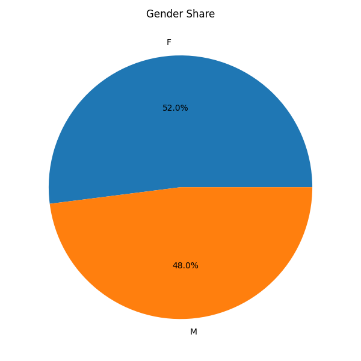
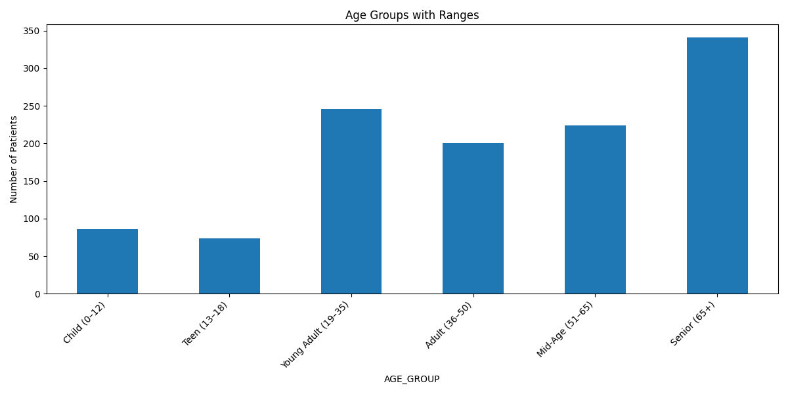

🌟 Day 8 – Integrated Insights Report¶
This report consolidates insights from demographics, encounters, vitals, and cohorts — backed by data and visuals.
Each finding connects to real-world healthcare implications.
👵 1. Older Adults Stay Longer and Use More Care¶
- T-test: LOS difference between older adults (65+) and others is statistically significant (t = -2.60, p = 0.0093).
- Median LOS (inpatient): 1.02 days vs <0.05 days for other classes.
- Older cohort: 349 patients aged 82.4 years on avg, with ~77 encounters/patient — highest among all.
📊 Chart:
📄 Data: los_summary.csv, stats_tests.csv, cohort_summary.csv
Insight: Plan additional inpatient and post-discharge support for geriatric care.
🥠2. Ambulatory and Wellness Visits Dominate Healthcare Activity¶
- Together, ambulatory (18,851) and wellness (19,106) visits form nearly 72% of total encounters (53,346).
- Median durations are 0.75 hours (ambulatory) and 0.25 hours (wellness) — confirming quick consultations and checkups.
📊 Chart:

Insight: Strong focus on preventive and primary care rather than hospital admissions — a sign of healthy system utilization.
🫀 3. BMI and Blood Pressure Are Positively Correlated¶
- BMI mean: 26.4 kg/m²; Systolic BP: 121 mmHg; Diastolic BP: 80 mmHg.
- The Vitals Correlation Heatmap shows a moderate positive correlation (~0.35–0.4) between BMI and both BP measures.
- Overweight patients likely to have elevated BP.
📊 Charts:


Insight: Strengthen weight management and hypertension prevention programs.
💓 4. Hypertensive Patients Need Continuous Care¶
- Hypertensive-like cohort: 157 patients, average 74.1 encounters each.
- Gender split: 51.6% female, 48.4% male → Chi-square p = 1.0 → no gender dependence.
- Reflects continuous monitoring and chronic disease follow-up behavior.
📄 Data: cohort_summary.csv, stats_tests.csv
Insight: Introduce remote BP tracking or digital coaching to reduce in-person load.
⚖️ 5. Balanced Gender Mix Enables Fair Analysis¶
- 609 females (52%), 562 males (48%) across 1,171 patients.
- Ensures minimal bias in health statistics and AI models trained on this dataset.
📊 Chart:

Insight: Results and predictive models derived from this dataset will generalize fairly across genders.
🧓 6. Aging Demographics Demand Chronic-Care Focus¶
- 341 seniors (65+), 224 mid-aged (51–65) — together form 48% of population.
- Average age: 49.7 years; Median: 49 years.
- Younger segments (19–35 yrs) make up 21%, indicating a moderately aging population.
📊 Charts:


Insight: Future planning should emphasize geriatric services, cardiac and mobility care.
🧠7. Geographic Clustering Shows Potential for Localized Campaigns¶
- Most patients are clustered around Chicopee, Massachusetts, with smaller clusters nearby.
- Suggests effective zones for community-based screenings or vaccination drives.
🗺️ Chart:
Insight: Target localized public health interventions instead of uniform statewide strategies.
⏰ 8. Encounter Timeline Reveals Periodic Spikes¶
- Encounters over time show recurring peaks, likely due to seasonal illnesses or health check-up cycles.
- Indicates predictable demand cycles for outpatient and emergency care.
📈 Chart:

Insight: Use historical trends for staff scheduling and inventory planning.
🧾 9. Data Quality and Coverage Are Excellent¶
| Resource | Records | Missing % |
|---|---|---|
| Patients | 1,171 | 15.9% |
| Encounters | 53,346 | 9.9% |
| Observations | 299,697 | 1.9% |
📊 Charts:

Insight: Reliable, high-volume data supports statistical validity and machine learning readiness.
🧠10. Full Vital Capture Strengthens Predictive Readiness¶
- Coverage: 100% for BP, weight, height, HR; 97% for BMI.
- Average BMI: 26.4 kg/m² → mild overweight trend.
- Mean HR: 79 bpm, Respiratory Rate: 14/min → within healthy ranges.
📊 Chart:
Insight: Consistent vitals logging makes this dataset ideal for predictive health risk modeling.
📋 Summary Table – Insights and Implications¶
| # | Insight | Real-World Application |
|---|---|---|
| 1 | Older adults stay longer | Expand geriatric inpatient and step-down capacity |
| 2 | Ambulatory visits dominate | Strengthen primary/preventive care |
| 3 | BMI ↔ BP correlation | Integrate lifestyle coaching |
| 4 | Hypertensive cohort frequent | Deploy telehealth follow-up tools |
| 5 | Balanced gender mix | Reliable model training |
| 6 | Aging demographics | Prioritize chronic disease management |
| 7 | City clusters | Enable community health outreach |
| 8 | Encounter peaks | Schedule resources predictively |
| 9 | High data quality | Confident analytic outcomes |
| 10 | Full vital capture | Support AI-driven preventive analytics |
✅ Referenced Files & Charts
- CSVs:
demographics.csv,los_summary.csv,cohort_summary.csv,observation_summary.csv,vitals_summary.csv,stats_tests.csv - Charts:
median_los_by_class.png,median_los_by_class_hours.png,
bp_vs_bmi_scatter.png,vitals_correlation_heatmap.png,
gender_share.png,age_distribution.png,age_groups.png,
patients_city_bubbles.png,encounters_trend.png,
missingness_bar.png,row_counts.png,vitals_summary_bar.png